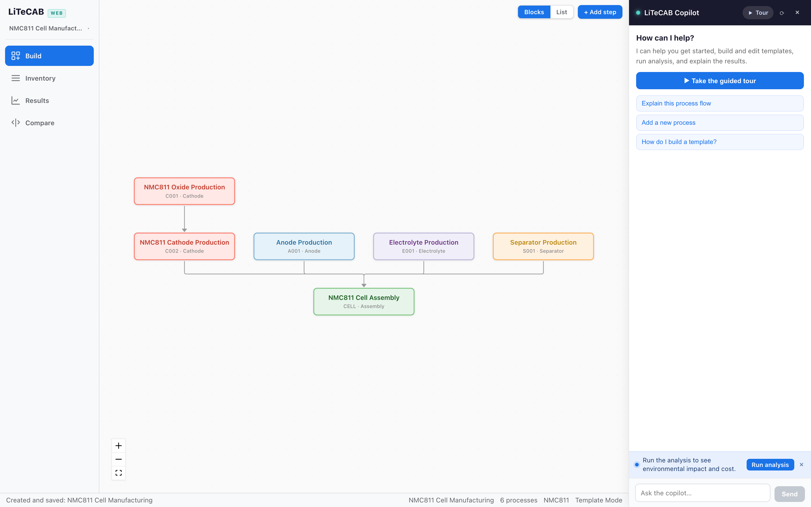
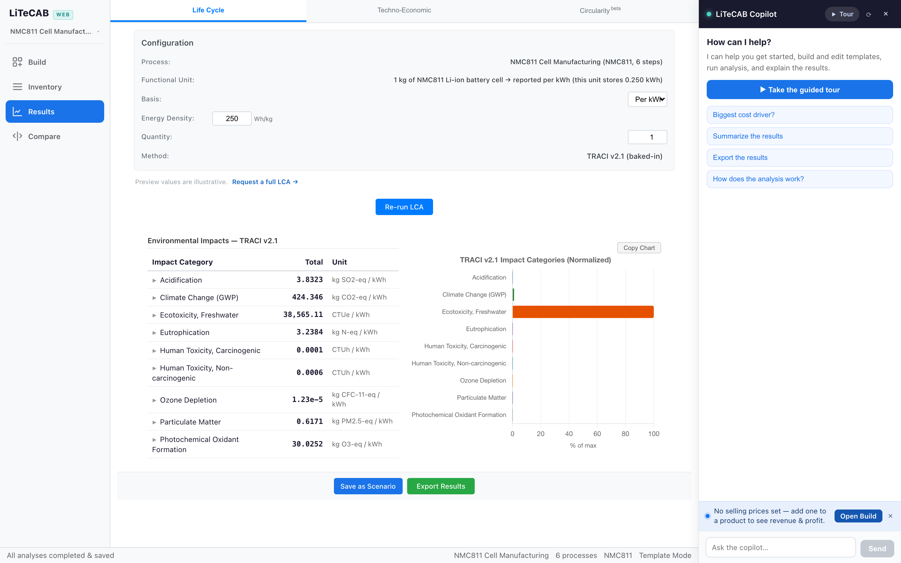

See the impact and cost of your battery process — before you build it.
LiTeCAB is a free tool for battery researchers and manufacturers. It estimates your process's environmental footprint — a life cycle assessment (LCA) — and its production economics — a techno-economic analysis (TEA) — right in your browser. Pick a template, press run, and an AI copilot walks you through the rest.

"Is it greener? Is it cheaper?" — simple questions, painful answers
Slow to start
Traditional tools need databases, licenses, and days of setup before they produce a single number.
Scattered
Environmental results in one tool, costs in a spreadsheet, conclusions in slides. The full picture never lives in one place.
Experts only
Most tools assume a trained analyst. Most teams don't have one to spare.
One tab. Full picture.
Pick a template, press run, read the results — in plain language.

The free app is a screening preview — generic templates, indicative results. Tailored versions run your process data with licensed datasets.
What the numbers do for your business case
Stronger funding proposals
Grant reviewers and investors increasingly expect quantified impact and cost projections. Put real per-kWh numbers in your next application instead of adjectives.
Credible sustainability claims
Back PR and product claims with process-level results you can explain and defend — not figures borrowed from someone else's study.
Evidence against the status quo
Compare your process with the incumbent side by side, and show exactly where you win — emissions, cost, or both.
Cheaper course corrections
Screen options in an afternoon and find the expensive problems while they're still cheap to fix — before pilot-scale money is committed.
New to LCA and TEA?
Two short guides, written in plain English.
Common questions
What is LiTeCAB?
LiTeCAB is a free browser-based tool that estimates the environmental footprint (life cycle assessment), production cost (techno-economic analysis), and circularity of battery manufacturing and recycling processes. It was developed at Purdue University with support from ARPA-E's CIRCULAR program.
Do I need to install anything or create an account?
No. LiTeCAB runs entirely in your web browser, and your projects are stored locally on your device.
Do I need to be an LCA or TEA expert?
No. Ready-made templates and an AI copilot handle the setup, and results come with plain-language explanations. If you can describe your process, you can run an analysis.
Is the data in the free version real?
Partly. The built-in templates are based on real, public data, but they describe generic, high-level battery processes. And because licensed impact databases such as ecoinvent can't be redistributed in a free web tool, the environmental results are indicative previews rather than decision-grade values.
What does a tailored version for our organization include?
Templates built from your own process data instead of generic ones, results computed through your organization's licensed datasets (for example, ecoinvent), your cost assumptions, and private hosting for your team. That's what turns the free preview's indicative results into decision-grade numbers. Tell us what you're working on.
Get LiTeCAB tailored to your organization
The free app is a screening preview: generic battery templates, indicative results. For organizations, we build tailored versions — templates from your own process data, results computed with licensed datasets such as ecoinvent, your cost assumptions, and private deployment for your team.
Tell us what you're working on and we'll follow up with a walkthrough.